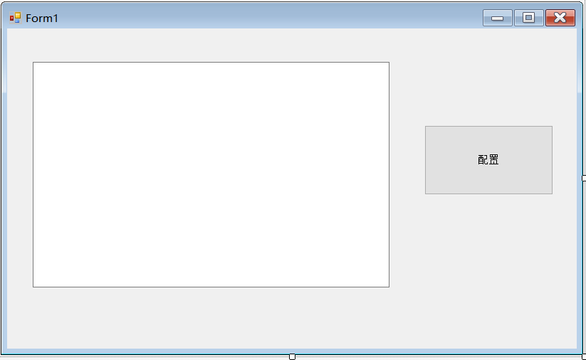
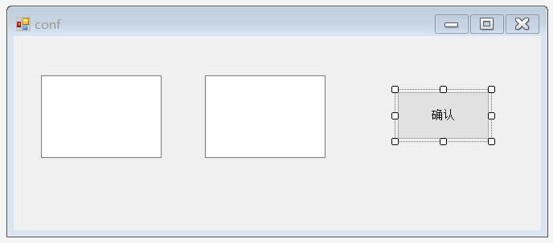

简介
基于C#的Winform开发时，经常会涉及窗体间传值，比如配置某个参数，通常的方式是点击按钮弹出对话框，然后在TextBox中输入参数，点击确认后，关闭弹出对话框并将TextBox中参数传递给主界面，这里就涉及到两个窗体间传值
基于事件的窗体传值
这里展示一个简单的例子，新建一个名为PassArgs的窗体应用，默认窗体Form1作为主窗体，在其中拖入一个TextBox框和一个Button按钮，分别作为显示参数框和配置按钮，将TextBox的Multiline设为true。

创建一个新窗口作为弹出的配置窗口，右键PassArgs工程名，选择添加->新建项->Windows窗体，命名为conf.cs，点击确认

点击“配置”按钮后弹出conf窗体的设置非常简单，双击“配置”按钮，
在“private void button1_Click(object sender, EventArgs e)”内输入以下代码：
1 | conf conf1 = new conf(); |
现在弹窗配置完成。
打算通过conf对话框中的两个TextBox向Form1传入两个参数，比如“Godric”和“Stupid”，然后显示在Form1的TextBox中
因为传递的是两个参数，但是EventHandler类只能传递一个参数，因此在Form1.cs中定义一个Args类，用来保存“Godric”和“Stupid”。Args类定义如下：
1 | public class Args : EventArgs |
Args类中有两个字段name、state，两个构造函数Args()、Args(string theName, string theState)，以及两个方法getName()、getState()和一个静态方法PassArgs(object o, Args e)，PassArgs作为事件的注册函数，注册到接下来将要定义的事件中，PassArgs的定义中包含args1对象，使得PassArgs的扩展性变差，但是没有办法，事件传值只能有(object o, Args e)两个参数。
接下来定义conf.cs中的“确认”按钮，双击“确认”输入一下代码：
1 | private void button1_Click(object sender, EventArgs e) |
其中confPass为事件名，需要添加在conf.cs的conf类最开始位置：
1 | public event EventHandler<Form1.Args> confPass; |


下面是运行结果：

基于DialogResult传值
基于DialogResult传值方法比较简单，当弹出窗口conf的DialogResult属性设置为OK时，可以在主窗口中获得参数值。
和之前一样，仍旧定义Args类：
1 | public class Args |
“配置”按钮的点击代码如下：
1 | args = new Args(textBox1.Text,textBox2.Text); |
在conf类中声明一个名为args的Args类，上面的代码第一句是将args实例化并通过Args类的第二个构造函数将TextBox.Text和textBox2.Text赋值给args，第二行代码将conf1的DialogResult属性更改为OK状态，然后关闭对话框。
在conf1.cs中需要定义属性argsPass：
1 | public Args argsPass |
C#中属性的使用和对象中的方法非常类似，属性看起来非常像写入或读取一个字段，语法相同，属性和字段不同的是，字段会为数据分配内存地址，属性不会为数据分配内存地址。上面的代码定义了名为argsPass的Args类型的属性，set访问器为空，get访问器返回预先声明的Args类型的args对象。
form1中的“配置”按钮代码如下：
1 | conf conf1 = new conf(); |
其中if判断conf1的DialogResult属性是否为OK，如果是，将conf1的argsPass属性传出的Args对象在listBox1中分行显示。
总结
从上面两个例子可以看出，相比于DialogResult传值，事件传值过程比较复杂，而且逻辑难于梳理，但是事件作为C#中的一个重要特性，仍然有必要掌握。